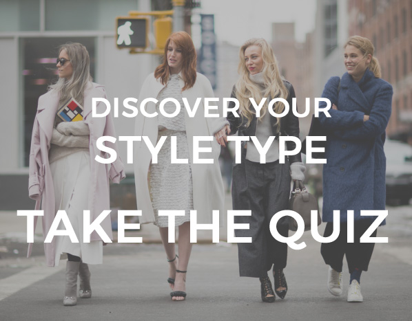

×
×
ClothBox
Digital Closet
Budget Calculator
Donate
Style Quiz
×
×
Style Quiz
Style Quiz

View trending outfit
1. If we opened your closet, what color palette would we mostly see?
basics, such as navy, white, khaki, charcoal, or brown
black and neutrals
a rainbow of colors
earth tones
black with touches of bold color
2. How would your friends describe you?
traditional and proper
sharp and direct
playful and spirited
relaxed and liberal
innovative and forward-thinking
3. Given a chance, which would you rather do?
get comfortable in khakis, a collared shirt, and your cutest loafers
put on a sleek V-neck top and modern-cut pant
step out in a fun floral dress or bright mixed prints
throw on a pair of jeans, T-shirt with funky accessories
grab your favorite jacket with interesting and unusual details to wear with a black pant
4. If someone gave you $500 for clothes, how would you use it?
buy a couple outfits at J.Crew or Banana Republic
spend it on a cashmere wrap
splurge on anything that catches your eye
add to your accessories collection with a slouchy suede bag
buy a dress that makes you feel smart and unique
5. When you walk into a crowded room, what would you prefer to do?
blend in
be in control, exude power
be animated
seem natural and easygoing
make a statement
6. When you have the urge (or need) to go shopping, you are more likely to do which of the following?
purchase practical basics for all seasons
buy high-quality, smart pieces that are sure to be in style
get something with a splash of color to brighten your day
head to the flea market for some great "lived-in" and funky finds
find that unusual piece to add to your wardrobe that no one else will have
7. What is your go-to coat like?
straight and sleek
sharp and powerful, perhaps boxy
romantic with a flared princess cut
an easy and flowy cape
edgy and asymmetrical
8. When you flip through pages of fashion magazines, which is most likely to catch your eye?
a Ralph Lauren lifestyle ad
that little black dress in the “special occasion” section
stacked bangles
wide brim hats and denim
a story on the new designers from Tokyo and Belgium
9. Which of the following best describes the decor of your home?
comfortable and traditional (think Ralph Lauren)
streamlined, tonal, with clean surfaces (think Tom Ford)
fun, kitschy, and unorthodox (think Alice in Wonderland)
lots of rugs, earth tone, and floral prints (think 70s)
minimalist, architectural, and sculptural (think modernist, futuristic)
10. What is your favorite handbag like?
a tote with initials (think Goyard)
a minimalist tote in neutrals (think Celine)
a leather tote with studs and embellishments, or a pop of color (think Alaia)
a backpack or a worn-in leather bag, perhaps with fringe (think Balenciaga or Chloe)
a black statement clutch, perhaps with python or alligator skin (think Margiela or Maiyet)